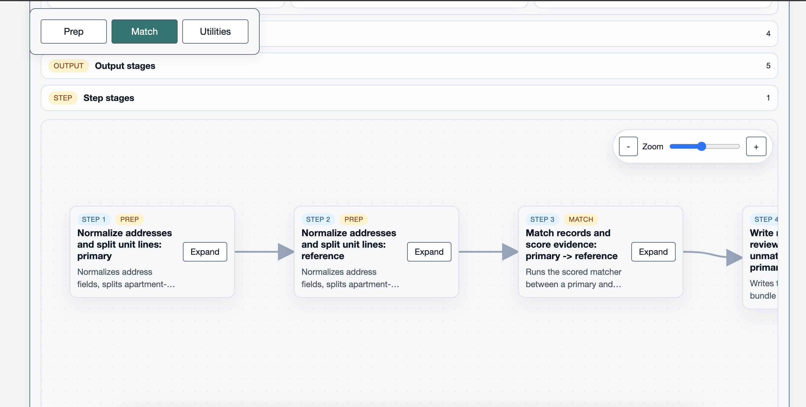
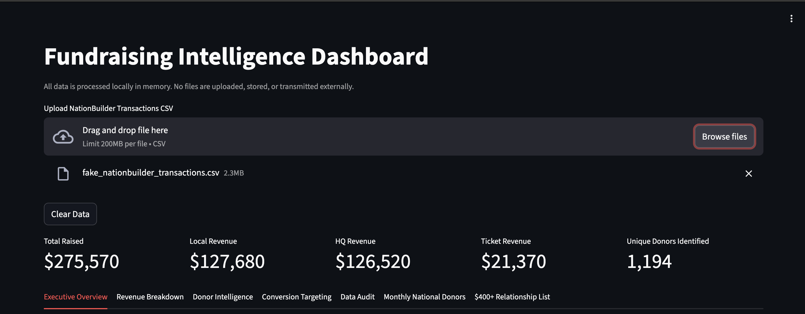
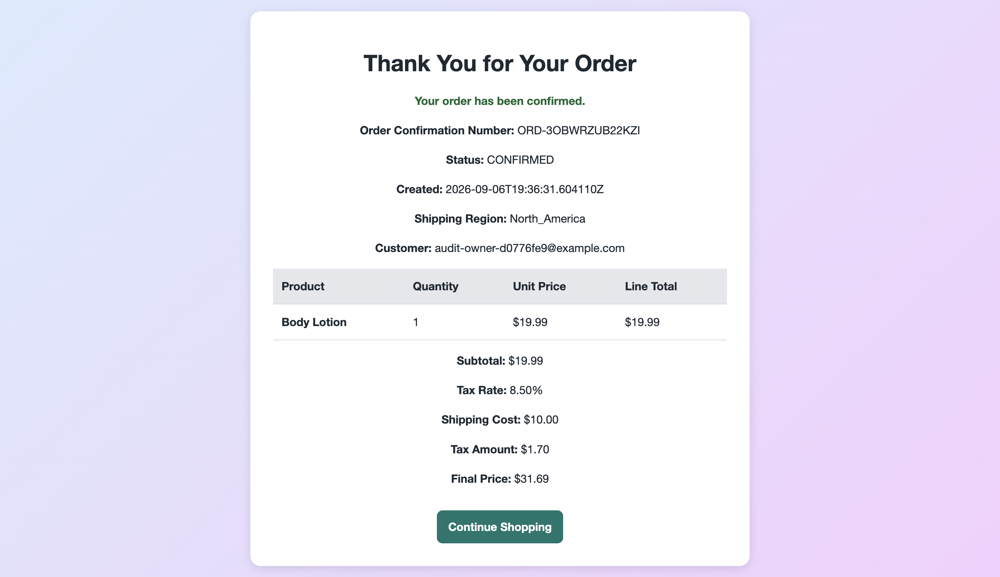

Pipeline / CSV Record Pipeline
Local workflow engine for messy CSV exports with normalization, matching, enrichment, scoring, and export stages. Built to replace one-off spreadsheet work with something repeatable.
Software Portfolio
Most of my recent work has been around messy exports, repeatable automation, backend-heavy builds, and local tools that make admin work less fragile.

Featured build
YAML-driven record processing system for messy CSV exports with local UI, configurable stages, and review-ready outputs.
Open repositorySelected work
Public repositories that best show how I build tools, clean data, and structure backend-heavy work.
Local workflow engine for messy CSV exports with normalization, matching, enrichment, scoring, and export stages. Built to replace one-off spreadsheet work with something repeatable.

Local analytics dashboard for NationBuilder transaction exports with donor segmentation, contribution-limit tracking, and exportable targeting lists.

Java web application with server-rendered views, database persistence, security, and Docker-based local deployment.
Focus
I like turning repetitive admin and spreadsheet work into tools that are easier to run and harder to break.
A lot of my strongest work involves imports, matching, validation, segmentation, reporting, and cleaning up inconsistent source data.
Most of my recent work has been in Python, Java, SQL, Streamlit, Spring Boot, Git, Docker, and database-backed applications.